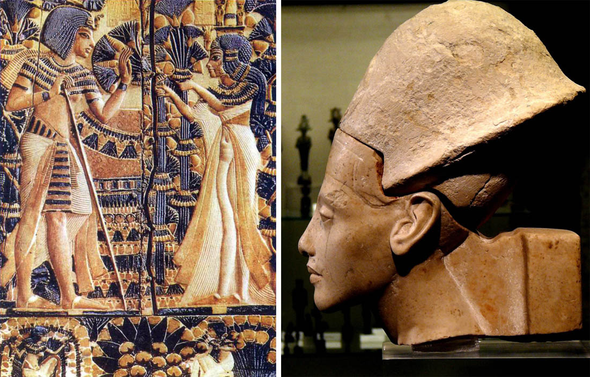
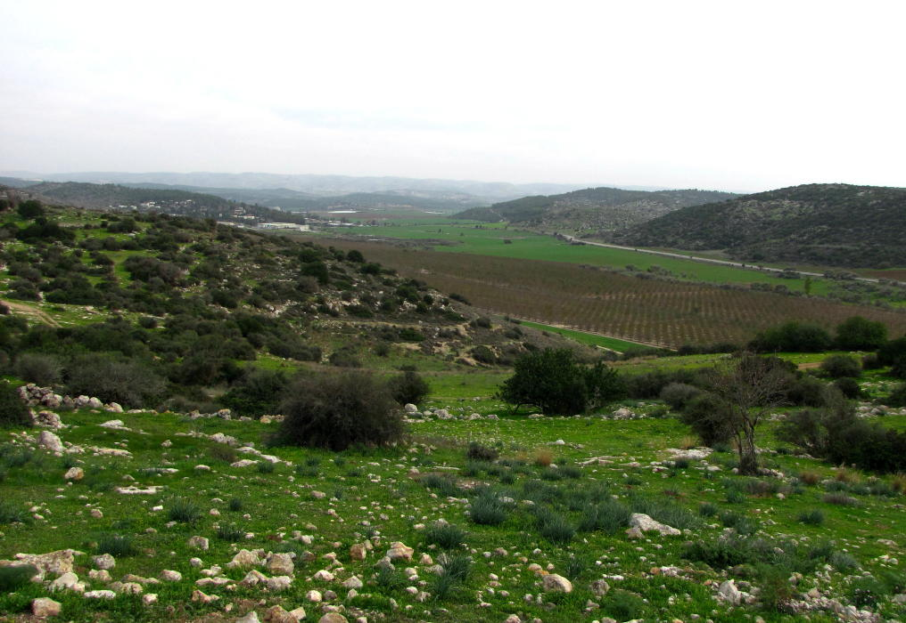
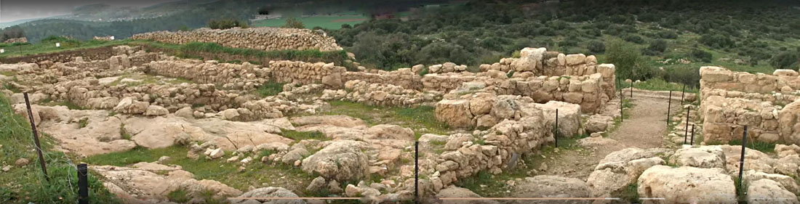
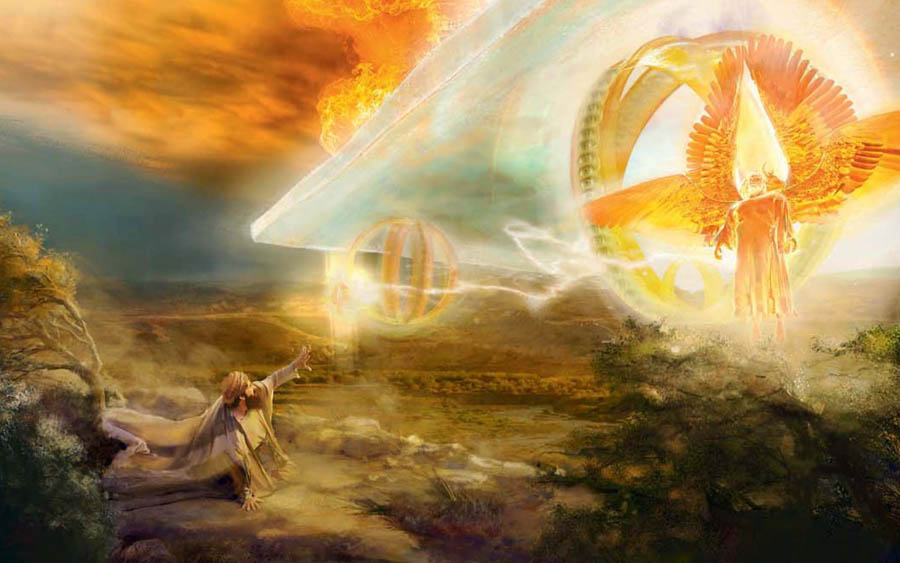

Fragrances of the North Wind
"Arise, [wind,] from the north, and come from the south; blow upon my garden, and let its fragrances flow! Let my beloved come…" (Song 4:16)
The wind playing a harp (an Aeolian harp):
Some commentators consider the NEVEL to be not a stringed but a wind instrument. The wind can play wind instruments too.
Since ancient times people in the Middle East have spoken of the North Wind. What is meant is not so much the weather as the symbolic meaning that fills this name, the North Wind.
In modern Israel the idea of the "North Wind" is still in use. There is a yeshiva of that name. "Ruach Tsfonit" (North Wind) is also the name of a Hasidic music group.
In the 14th century BC in ancient Egypt, Pharaoh Akhenaten, dedicating verses to his beloved, had these words inscribed on a precious sarcophagus overlaid with gold plates: "Her breath is like the breath of the north wind, which brings splendid fragrances."

Strikingly similar words, perhaps inspired by the Egyptian poet, we meet more than four centuries later in the Song of Songs of King Shlomo:
"Arise, [wind,] from the north, and come from the south; blow* upon my garden, and let its fragrances** flow! Let my beloved come into his garden and eat its sweet fruits."
Song 4:16
עוּרִי צָפוֹן וּבוֹאִי תֵימָן הָפִיחִי גַנִּי יִזְּלוּ בְשָׂמָיו
יָבֹא דוֹדִי לְגַנּוֹ וְיֹאכַל פְּרִי מְגָדָיו׃
Here, in all likelihood, the North Wind (Hebrew TSAFON) is meant, which awakens to life, bringing refreshment and moisture, while the south wind (Hebrew TEIMAN) brings warmth for the ripening of the fruit.
* פּוּחַ (H6315, PUACH): 1. to blow, to breathe; 2. to speak. It is interesting that the word translated "blow" can also be translated "speak". Speak, wind, bring words of refreshment and warmth.
** בֹּשֶׂם (H1314, BOSEM): balsam (the tree or its oil), fragrance, spice. Today the word means perfume and the spices used in the Havdalah ceremony at the close of Shabbat.
Zeev Dashevsky comments on these words of the Song of Shlomo as follows: 4:16 "If I am a garden of spices, says Shulamit, let the winds blow harder and carry the scent of my spices all around, so that my beloved may find it (the scent, that is, me)…"
We meet the wind in the poetry of David, Shlomo's father, as well. Often it appears as a messenger of the Most High.
Ps. 104:3: "…who layeth the beams of his chambers in the waters: who maketh the clouds his chariot: who walketh upon the wings of the wind."
Ps. 147:18: "He sendeth out his word, and melteth them: he causeth his wind to blow, and the waters flow."

The North Wind is a frequent guest in the Valley of Elah. Quite recently, here, where the border with the kingdom of Gath once ran, Israeli archaeologists excavated the ruins of the fortress city of Khirbet Qeiyafa (late 11th to early 10th century BC, the time of King David's reign).
Since the north wind was at home in these parts, it may well be that it was here, in his palace, that David sang (Ps. 57:7–8 and Ps. 108:2): "My heart is fixed, O God, my heart is fixed: I will sing and give praise. Awake up, my glory; awake, psaltery and harp: I myself will awake early."

The text of these psalms does not mention the north wind. It is a midrash, explaining the words of the psalms, that speaks of it:
The north wind would wake the king. David waited for the north wind to blow through his palace, and for the NEVEL (the psaltery) left at his bedside to begin playing by itself at midnight, when the hand of the wind began to run over its strings. David, being a poet, waited to hear the stirring sounds of the strings of the nevel and the song of the north wind. And then he would begin to praise and exalt the Most High, filled with His Spirit.
Let us remember that in Hebrew the word RUACH has two meanings, wind and spirit. The same word read differently, REACH, means scent. Like the wind and like a scent, the Spirit of the Most High cannot be seen with the eye, but the action He produces can be perceived.
The words of the psalm "I myself will awake early" (A'IRA SHACHAR), if translated literally from Hebrew, would sound like "I will awaken the dawn".
"My heart is fixed, O God, my heart is fixed: I will sing and give praise. Awake up, my glory; awake, psaltery and harp: I myself will awake early. I will praise thee, O Lord, among the people: I will sing unto thee among the nations. For thy mercy is great unto the heavens, and thy truth unto the clouds."
Ps. 57:7–10
נָכוֹן לִבִּי אֱלֹהִים אָשִׁירָה וַאֲזַמְּרָה אַף־כְּבוֹדִי׃
עוּרָה הַנֵּבֶל וְכִנּוֹר אָעִירָה שָּׁחַר׃
אוֹדְךָ בָעַמִּים יְהוָה וַאֲזַמֶּרְךָ בַּל־אֻמִּים׃
NACHON LIBI ELOHIM ASHIRA VA-AZAMRA AF-KEVODI. URA HA-NEVEL VE-CHINOR A'IRA SHACHAR. ODCHA VA-AMIM ADONAI VA-AZAMERCHA BAL-UMIM.
Ps. 108:1–3
Two understandings are possible here: 1. I will rise before the dawn, so that it is not the dawn that wakes me but I who, as it were, wake it. 2. I will rise and praise the Most High prophetically, and then the dawn itself and everything around will awaken; an awakening will come upon the whole creation. That is, David's prophetic song, inspired by the north wind, creates here a kind of spiritual awakening, for the North Wind will come and bring the word of the Most High, refreshment from Him. And the whole creation will awaken and pass from darkness to light, for the dawn will rise.
The word SHACHAR (dawn) itself is interesting. Here are several meanings of words of the same root:
שְׁחַרְחֹר (H7840, SHECHARCHOR): swarthy, blackish.
שַׁחֲרוּת (H7839, SHACHARUT): the dawn of life, that is, youth.
שָׁחֹר (H7838, SHACHOR): black.
שַׁחַר (H7837, SHACHAR): dawn, daybreak, morning.
שָׁחַר (H7836, SHACHAR): to seek, to search for.
(after Strong)
SHACHAR is the process of passing from darkness (black) to light, from unripeness to maturity; it is longing and seeking.
David sang and prophesied. He changed reality, awakening the dawn, moving creation to strive to pass from darkness into light.
7 My heart is fixed, O God, my heart is fixed: I will sing and give praise.
8 Awake up, my glory; awake, psaltery and harp: I myself will awake early.
9 I will praise thee, O Lord, among the people: I will sing unto thee among the nations.
10 For thy mercy is great unto the heavens, and thy truth unto the clouds.
11 Be thou exalted, O God, above the heavens: let thy glory be above all the earth. (Ps. 57:7–11)
For our fathers, since ancient times, the idea of the North Wind carried refreshment, coolness and healing, and awakening to new life, abundance and the joy of long-awaited rain, as it is said in Prov. 25:23: "The north wind bringeth forth rain: and a backbiting tongue, an angry countenance."

It is also interesting that the North Wind takes part in the vision of the Glory of the LORD of the prophet Yechezkel (Ezek. 1:4–6): "And I looked, and, behold, a whirlwind came out of the north, a great cloud, and a fire infolding itself, and a brightness was about it, and out of the midst thereof as the colour of amber, out of the midst of the fire. Also out of the midst thereof came the likeness of four living creatures. And this was their appearance; they had the likeness of a man. And every one had four faces, and every one had four wings."
In the Bible the North Wind is often a Messenger of the Most High, bringing His word, healing and renewal.